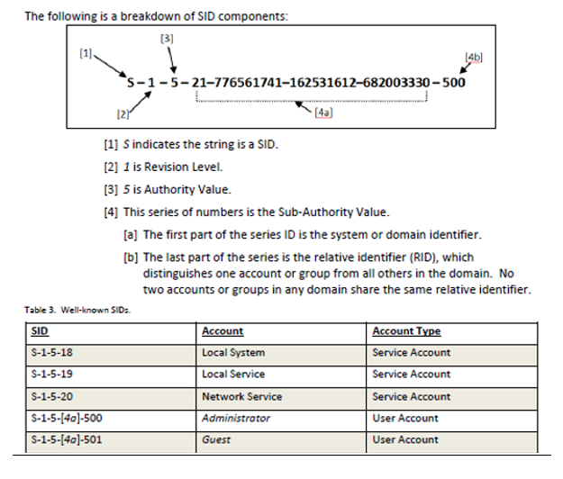

WINDOWS
Windows Boot Process
Phase 1 Pre-Boot- In this phase, the PC’s firmware is in charge and initiates a POST and loads the firmware settings. Once all this works (hopefully), the system identifies a valid system disk and reads the MBR. The system then starts the Windows Boot Manager. This is located here: %SystemDrive%\bootmgr
Phase 2 Windows Boot Manager
- It is the job of the Windows Boot Manager to find and start the Windows loader (Winload.exe). This is located on the Windows boot partition – %SystemRoot%\system32\winload.exe
Phase 3 Windows OS Loader
- In this phase, essential drivers required to start the Windows kernel are loaded and the kernel starts to run. The key file here is %SystemRoot%\system32\ntoskrnl.exe
Phase 4 Window NT OS Kernel
- The kernel picks up registry settings, additional drivers, etc., control is taken by system manager process, GUI is loaded. The kernel loads the system registry hive into memory and loads the drivers that are marked as BOOT_START. Finally, the kernel passes control to the session manager process (Smss.exe).
Back to Categories
Windows Registry
HKEY_LOCAL_MACHINE (HKLM) (master key)- Stores settings specific to the local computer. Not stored on disk; maintained in memory by the system kernel in order to map all the other subkeys.
-
Contains Four Sub-keys:
- SAM – Each SAM database contains all builtin accounts and configured accounts.
- Contains usernames, internal unique user identifier in the domain, a cryptographic hash of each user’s password for each enabled authentication protocol, location of storage of their user registry hive, status flags, and the list of domains into which the account was configured.
- SECURITY – Linked to the security database of the domain into which the current user is logged on.
-
- Kernel will access it to read and enforce the security policy applicable to the current user and all applications or operations executed by this user.
- SYSTEM – Contains information about the Windows System setup.
- SOFTWARE – Contains software and Windows settings (in the default hardware profile).
- Mostly modified by application and system installers. Organized by software vendor, but also contains a Windows subkey for some settings of the Windows user interface.
HKEY_CLASSES_ROOT (HKCR)
- Contains information about registered applications, such as file associations and OLE Object Class IDs. Compilation of user-based HKCU\Software\Classes and machine-based HKLM\Software\Classes
HKEY_CURRENT_USER (HKCU)
- Stores settings that are specific to the currently logged-in user. HKCU is a link to the subkey of HKEY_USERS that corresponds to the user. On Windows NT systems, each user’s settings are stored in their own files called NTUSER.DAT and USRCLASS.DAT inside their respective ‘Documents and Settings’ subfolders.
HKEY_CURRENT_CONFIG (HKCC)
- Doesn’t store any information itself, but acts as a pointer, or shortcut, to a registry key that keeps the information about the hardware profile currently being used. HKCC is a shortcut to the HKLM hive, where, in the SYSTEM subkey, the configuration information is actually stored. Mainly exists for convenience. You can make changes in either location to get the same results.
- Two subkeys:
- HKEY_CURRENT_CONFIG\Software
- HKEY_CURRENT_CONFIG\System
HKEY_USERS (HKU) (master key)
- Contains a SID sub-key for all loaded (logged in) user profiles. These user profile settings are stored in each user’s NTUSER.DAT and USRCLASS.dat files and are loaded at logon. Include sub-keys for each of the LocalSystem, LocalService, and Network Service accounts, as well as .DEFAULT (link to HKU\S-1-5-18) and Loaded into memory; not actually stored on disk. Data is read from the hive files.
Back to Categories
Security Identifier (SID)
… for Windows domain accounts- Used to uniquely identify a security principal or security group. Each account or group has a unique SID issued by an authority such as a Windows Domain Controller. Stored in a security database; each time a user signs in, the system creates an access token for that user, containing the user’s SID, user rights, and the SIDs for any groups the user belongs to.
- Breakdown of a SID:
- String ID (this one indicates the string is a SID with the ‘S’ value)
- Revision level – version of the SID structure used in a particular SID
- ID authority – Highest level of authority that can issue SIDs for a particular type of security principal. (1 is lowest: Everyone, while 5 is highest: NT Authority (System))

Back to Categories
PowerShell Commands
- Understand basic syntax and relational commands:
- Get – To get something. (ex: get-help)
- Start – to run something. (ex: start-job)
- Out – to output something. (ex: out-file)
- Stop – to stop something that’s running. (ex: stop-process)
- Set – to define something. (ex: set-item)
- New – to create something. (ex: new-smbshare)
- Get – To get something. (ex: get-help)
Back to Categories
Windows Commands
(case insensitive)-
tasklist – Displays a list of currently running processes on the local computer or a remote computer. (replaces tlist)
- /s <computer> -specifies the name/IP address of a remote computer, default is local system
- /u <domain>\<username> - runs command with the account permissions of the user specified
- /p <password> -specifies password of the user account in the /u parameter
- svc - lists all the service information for each process without truncation
- /fo {table | list | csv} -specifies the format to use for the output, default is table
- /fi <filter> -specifies types of processes to include in or exclude from the query (examples: ‘STATUS’, ‘IMAGENAME’ or ‘IM’, ‘PID’, ‘SESSION’, etc.)
- /m – lists all tasks with DLL modules loaded that match the given pattern.
- /v – displays verbose task information in output.
- /s <computer> -specifies the name/IP address of a remote computer, default is local system
-
ipconfig – Display all current TCP/IP network configuration values and refreshes DHCP and DNS settings.
- /all - Displays full TCP/IP configuration for all adapters.
- /release - Sends a DHCP release message to the server to discard the IP address configuration of the specified interface.
- /renew - Sends a DHCP message to the server to request a new IP address for the specified interface.
- /flushdns - Flushes/resets the contents of the DNS client resolver cache.
- /all - Displays full TCP/IP configuration for all adapters.
-
netstat – Displays active TCP connections, ports on which the computer is listening.
- See the Linux description. (Operates the same way on Windows.)
- See the Linux description. (Operates the same way on Windows.)
-
tracert – Determines the path taken to a destination by sending ICMP echo Request to the destination with incrementally increasing TTL field values.
- /h - Specifies the max amount of hops.
- /h - Specifies the max amount of hops.
Back to Categories
Windows Miscellaneous
- SysWOW64: subsystem of Windows OS capable of running 32-bit applications on 64-bit Windows
- Dynamic Link Library (DLL): library that contains code and data that can be used by more than one program at the same time
Links
- Hard Link - A directory entry that associates a name with a file on a file system.
- On Windows, only NTFS implements hard links.
- On POSIX-compliant systems (including Unix-Like systems), a hard link points to the inode of the file, instead of the file itself; hard link gains all the attributes of the original file and points to the same data block as the original file
- A pointer to a file’s inode and is the same as the original file. Link count doesn’t increase. (ln file1 file2)
- Symbolic Link - Term for any file that contains a reference to another file or directory in the form of an absolute or relative path and that affects pathname resolution. (aka ‘symlink’)
- Limited support on Windows OS’s, mainly used as shortcut files.
- On Unix systems, a symlink may be treated as an alias for the target. Any file management commands may be used on the symbolic link, and commands which read/write file contents will access the target file’s contents. (The rm command will only remove the link, and not the target; the mv command moves or renames the link, not the target.)
- *Nix directory long listing (ls -l) will denote symbolic links with an arrow after the name, pointing to the name of the target file. In order to see a listing of the linked directory, a ‘/’ must be included in the path. (example: ls -l symlink_1/)
- Inode - The metadata for each file and directory is stored in a data structure called an inode.
- Contains information processes need to access a file:
- File size
- Ownership (user, group, other)
- Timestamps
- Type
- Access permission (read, write, execute)
- Number of links
- Data blocks
File System
- Universal Naming Convention:
- \\host-name\share-name\file-path
- Example: \\server-01\share-01\file1.txt
- System Registry files in Windows NT: C:\Windows\System32\config\
- Windows DNS info: C:\WINDOWS\system32\DNS
Windows Logs
- Windows event logs: C:\WINDOWS\system32\config\
- Logged circumstances: C:\Windows\System32\Winevt\Logs\
- Event
- Error
- Warning
- Information
Back to Categories